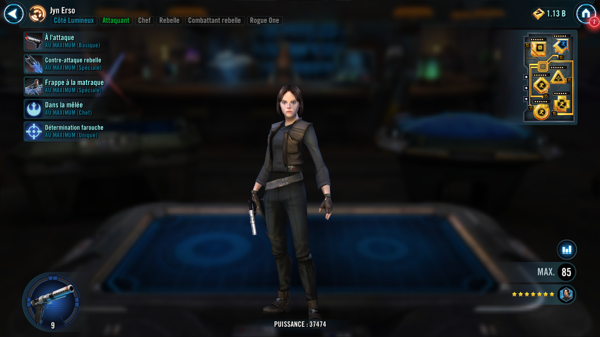
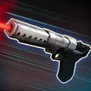

Jyn Erso
Offensive Rebel Leader who gains Advantage, Stuns enemies, revives Rebel allies and grants them Potency Up
Offensive Rebel Leader who gains Advantage, Stuns enemies, revives Rebel allies and grants them Potency Up


Deal Physical damage to target enemy with a 70% chance to gain Advantage for 2 turns.
Deal Physical damage to all enemies and grant target other ally 100% Turn Meter and Advantage for 2 turns. If any Critical Hits are scored, revive a random Rebel ally with 20% Max Health for each Critical Hit scored.
Deal Physical damage to target enemy and remove all Turn Meter. Jyn gains that much Turn Meter. On a Critical Hit, Stun the target for 1 turn.
Rebel allies have +35% Potency and recover 5% Protection whenever they gain a buff. Enemies that suffer debuffs during Rebel allies' turns have a 50% chance to also become Exposed for 2 turns. This Expose can't be Resisted.
Rogue One allies are immune to Buff Immunity. Jyn is immune to Stun and gains 10% Potency each time she critically hits an enemy.
Omicron Boost : While in Territory Wars: Rogue One allies gain 30% Max Health and Potency and 20 Speed. Whenever a Rogue One ally's buff expires during an enemy's turn, Jyn gains 10% Turn Meter. If all allies are Rogue One at the start of battle, whenever Jyn critically hits an enemy, all allies recover 10% Health and gain an additional bonus depending on their role
- Attacker Gain Critical Damage Up and Offense Up for 2 turns
- Tank Gain Critical Hit Immunity and Taunt for 2 turns
- Support or Healer Gain Evasion Up and Speed Up for 2 turns